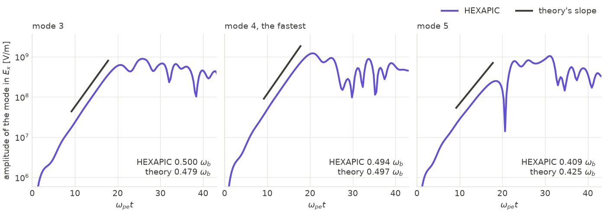
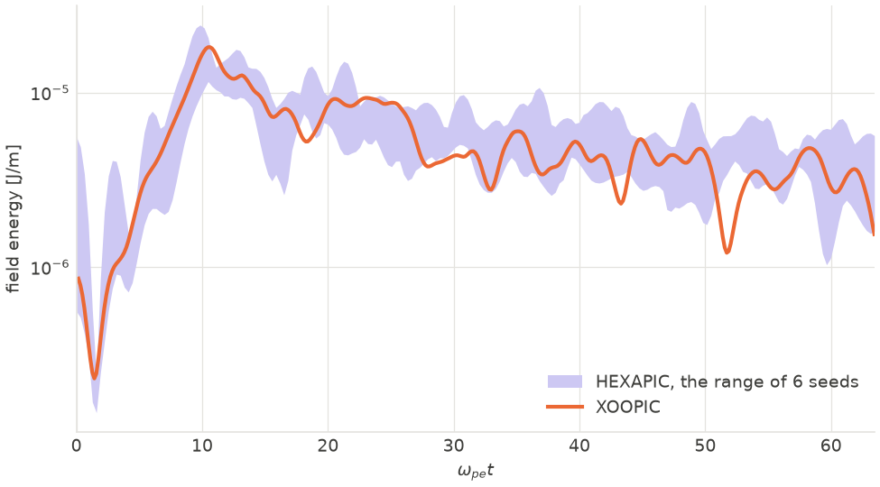

Two-stream instability#
Two cold electron beams of equal density move through each other in a periodic box, over a neutralising background of ions. The configuration is unstable: a perturbation of the charge density grows exponentially until the electrons are trapped in the wave’s potential, and the field energy saturates. The growth rate is known analytically, which makes the case a test of the particle push, the charge deposition and the field solve together.
Setup#
Domain |
6.786 µm × 0.212 µm, periodic in \(x\) and \(y\) |
Grid |
256 × 8 cells of 26.5 nm; the problem is 1-D along \(x\) |
Electrons |
two beams, \(5\times10^{23}\ \mathrm{m^{-3}}\) each, drift \(\pm10^{7}\) m/s along \(x\), thermal speed \(3\times10^{4}\) m/s |
Ions |
He⁺, \(10^{24}\ \mathrm{m^{-3}}\), thermal speed \(3\times10^{3}\) m/s, moved every 10th step |
Particles |
4 per cell in each beam and in the ions; the beams start on the ions’ positions |
Frequencies |
\(\omega_{pe} = 5.64\times10^{13}\) rad/s for both beams together, \(\omega_b = \omega_{pe}/\sqrt{2}\) for one |
Time step |
\(5.62\times10^{-16}\) s (\(\omega_{pe}\,\Delta t = 0.032\)) |
Run |
2000 steps (\(\omega_{pe} t = 63\)), output every 10 steps, no charge smoothing |
Field solver |
GMGa3, the 2-D multigrid, as |
Cost |
about 6 s on one NVIDIA A100 |
Running#
python examples/basic_plasma/two_stream/case.py runs/two_stream --run
python examples/basic_plasma/two_stream/analyze.py runs/two_stream
case.py writes runs/two_stream/case.toml and, with --run, runs
build/HEXAPIC on it (--hexapic names another binary). case.toml beside
the script is the same case, for a run without Python: build/HEXAPIC examples/basic_plasma/two_stream/case.toml -d runs/two_stream/output.
analyze.py prints the numbers below and writes results.json and the
figure into the run’s directory.
Option of |
|
|---|---|
|
run HEXAPIC on the case |
|
write the frames that HEXAPIC / VIZ shows during the run |
|
load every species at random positions, as XOOPIC does |
|
the seed of the random numbers |
|
write the case as an XOOPIC deck, |
Results#
Growth rate against theory#
For two cold beams with the speeds \(\pm v_b\), a mode with the wave number \(k\) grows when \(k v_b < \sqrt{2}\,\omega_b\), at the rate \(\gamma\) given by
The largest rate is \(\gamma = \omega_b / 2\), at \(k v_b = (\sqrt{3}/2)\,\omega_b\).
The box holds the modes \(k = 2\pi n / L_x\), and the fastest of them is \(n = 4\)
with \(\gamma = 0.497\,\omega_b\). analyze.py takes the amplitude of each mode
from the Fourier transform of \(E_x\) and fits its growth rate over the three
e-folds before saturation.

The amplitudes of the three fastest modes. The black line has the slope of the theory and is shown over the interval of the fit.
Mode \(n\) |
3 |
4 |
5 |
|---|---|---|---|
HEXAPIC, \(\gamma / \omega_b\) |
0.500 |
0.494 |
0.409 |
Theory, \(\gamma / \omega_b\) |
0.479 |
0.497 |
0.425 |
Over six seeds the fastest mode grows at \((0.494 \pm 0.008)\,\omega_b\). The test
two_stream in tests/physics/run.py requires 5 %.
The measurement needs the beams to start on the ions’ positions. The charge density is then zero at the start, and the instability grows from the small noise of the thermal spread over about seven e-folds. With every species loaded at random, the field energy starts only about 25 times below its saturated value, and there is no linear phase to fit.
Field energy against XOOPIC#
XOOPIC loads its particles at random, so this comparison uses
--random-load. The history of the field energy then depends on the seed as
much as on the code, and XOOPIC’s run is compared with six seeds of HEXAPIC:
for s in 1 2 3 4 5 6; do
python examples/basic_plasma/two_stream/case.py runs/two_stream_$s --random-load --seed $s --run
done
python examples/basic_plasma/two_stream/analyze.py runs/two_stream_?

The field energy of XOOPIC’s run and the range of six HEXAPIC runs with different seeds.
HEXAPIC, 6 seeds |
XOOPIC |
|
|---|---|---|
Saturation, \(\omega_{pe} t\) |
\(11.5 \pm 2.0\) |
10.6 |
Field energy at saturation [J/m] |
\((1.79 \pm 0.35)\times10^{-5}\) |
\(1.82\times10^{-5}\) |
Mean field energy over the second half [J/m] |
\((4.6 \pm 0.8)\times10^{-6}\) |
\(3.8\times10^{-6}\) |
XOOPIC’s numbers lie within about one standard deviation of HEXAPIC’s seeds.
They come from its stored run in reference/xoopic/.
Files#
|
the case as a PICMI script |
|
the case as |
|
the growth rates and the comparison with XOOPIC, from one or several runs |
|
the figures above, as |
|
XOOPIC’s deck and its energies |
|
the sources of the theory and of the reference data |
The script#
case.py
#!/usr/bin/env python3
"""two_stream_ee_es: This is the classic electron/electron two-stream instability, with counter-propagating electron beams having velocities much larger than their thermal velocity.
After XOOPIC's deck input/two_stream_ee_es.inp (reference/SOURCE.md), as a PICMI script: one
description of the case for HEXAPIC and for XOOPIC.
python case.py DIR # DIR/case.toml
python case.py DIR --run # and HEXAPIC on it (build/HEXAPIC; --hexapic: another), into DIR/output
python case.py DIR --xoopic # DIR/case.inp, the same case as an XOOPIC deck (--run: XOOPIC on it)
python case.py # the case.toml beside this script (--xoopic: reference/xoopic/case.inp)
The electron beams start on the ions' positions: no charge anywhere at the
start, so the instability grows from the noise of the thermal spread and its
growth rate can be measured (analyze.py). --random-load draws every load's
positions at random, as XOOPIC's deck does (--xoopic: always). --seed N is
the run's seed, --live writes the frames HEXAPIC / VIZ shows during the run.
"""
import argparse
from pathlib import Path
ap = argparse.ArgumentParser(description="the two-stream instability: case.toml, or XOOPIC's deck")
ap.add_argument("dir", nargs="?", type=Path)
ap.add_argument("--xoopic", action="store_true")
ap.add_argument("--random-load", action="store_true")
ap.add_argument("--seed", type=int)
ap.add_argument("--live", action="store_true")
ap.add_argument("--run", action="store_true")
ap.add_argument("--hexapic", type=Path, help="the binary --run runs (default build/HEXAPIC)")
args = ap.parse_args()
HERE = Path(__file__).resolve().parent
QUIET = not (args.random_load or args.xoopic)
if args.xoopic:
from xoopic import picmi
else:
from hexapic import picmi
grid = picmi.Cartesian2DGrid(number_of_cells=[256, 8], lower_bound=[0.0, 0.0],
upper_bound=[6.785863209393971e-6, 2.1205822529356158e-7],
lower_boundary_conditions=["periodic", "periodic"],
upper_boundary_conditions=["periodic", "periodic"])
run = ({"init": "local"} if QUIET else {}) | ({} if args.seed is None else {"seed": args.seed}) # same_positions_as needs local
sim = picmi.Simulation(solver=picmi.ElectrostaticSolver(grid=grid), time_step_size=5.623042841679827e-16, max_steps=2000,
hexapic_run=run or None, hexapic_output={"live": True} if args.live else None,
hexapic_smoothing={"x_passes": 0, "y_passes": 0}, # a measurement: no charge smoothing
hexapic_title="two_stream_ee_es",
hexapic_description=("This is the classic electron/electron two-stream instability, "
"with counter-propagating electron beams having velocities much "
"larger than their thermal velocity. We work in pseudo-1D "
"geometry. It's 2D Cartesian geometry, but the y-direction is "
"only 2 cells across with periodic BC's. The x-direction is long. "
"The field solve is electrostatic. Hence, there is also a "
"background distribution of ions to provide charge neutrality. "
"For the theory, see Sections 5-6 and 5-7 of the classic "
"reference C.K. Birdsall and A.B. Langdon Plasma Physics via "
"Computer Simulation McGraw-Hill, 1985"))
same = {"hexapic_same_positions_as": "ions"} if QUIET else {}
electrons = picmi.Species(name="electrons", mass=9.1094e-31, charge=-1.6022e-19,
initial_distribution=[picmi.UniformDistribution(density=5e23, lower_bound=[0.0, 0.0, None],
upper_bound=[6.785863209393971e-6, 2.1205822529356158e-7, None],
rms_velocity=[30000.0, 0.0, 0.0],
directed_velocity=[1e7, 0.0, 0.0],
hexapic_weight=87829474.4426854, **same),
picmi.UniformDistribution(density=5e23, lower_bound=[0.0, 0.0, None],
upper_bound=[6.785863209393971e-6, 2.1205822529356158e-7, None],
rms_velocity=[30000.0, 0.0, 0.0],
directed_velocity=[-1e7, 0.0, 0.0],
hexapic_weight=87829474.4426854, **same)])
sim.add_species(electrons, None)
ions = picmi.Species(name="ions", mass=6.646485633287956e-27, charge=1.6022e-19, hexapic_subcycle=10,
initial_distribution=picmi.UniformDistribution(density=1e24, lower_bound=[0.0, 0.0, None],
upper_bound=[6.785863209393971e-6, 2.1205822529356158e-7, None],
rms_velocity=[3000.0, 0.0, 0.0],
hexapic_weight=175658948.8853708))
sim.add_species(ions, None)
sim.load_order = [ions, electrons] # the [[load]] tables' order
sim.add_diagnostic(picmi.FieldDiagnostic(grid=grid, period=10))
if args.run and args.dir is None:
ap.error("--run needs a directory for the run")
out = args.dir or (HERE / "reference/xoopic" if args.xoopic else HERE)
print(sim.write_input_file(out / ("case.inp" if args.xoopic else "case.toml")))
if args.run:
sim.run(**({} if args.xoopic or args.hexapic is None else {"hexapic": args.hexapic.resolve()}))
References#
The cold two-stream instability’s growth rate: Birdsall and Langdon [1991],
sections 5-6 and 5-7. The case follows XOOPIC’s deck
input/two_stream_ee_es.inp [Verboncoeur et al., 1995], with 8 cells across
instead of 2.
XOOPIC’s run (xoopic/)#
case.inp: the deck XOOPIC ran, aspython case.py --xoopicwrites it (the random load).tests/physics/run.pyfails whencase.pywrites another one: the energies below would then be from another case.energy.csv: XOOPIC’s field and kinetic energy (J/m) at every 5th of 2000 steps, from theENERGY_CSVlines it prints. XOOPIC 2.70 (github.com/rinku-mishra/xoopic, 3fa6670) with those lines added tootools/diagn.cpp(Running XOOPIC gives the patch and the build), run asxoopic -nox -i case.inp -s 2000 -exiton 2026-11-16. XOOPIC draws the same load each run.